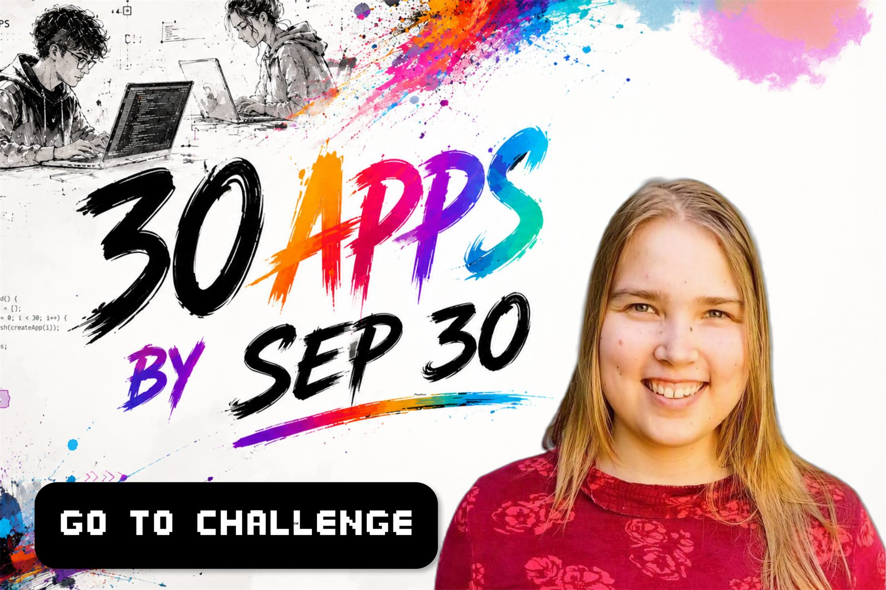
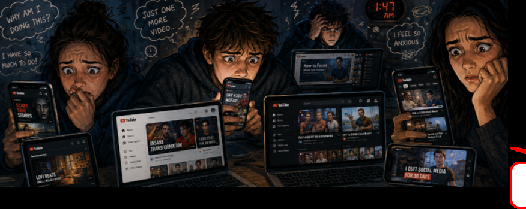
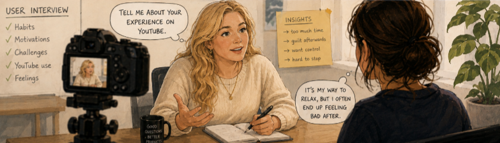
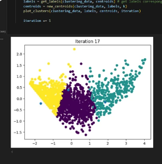
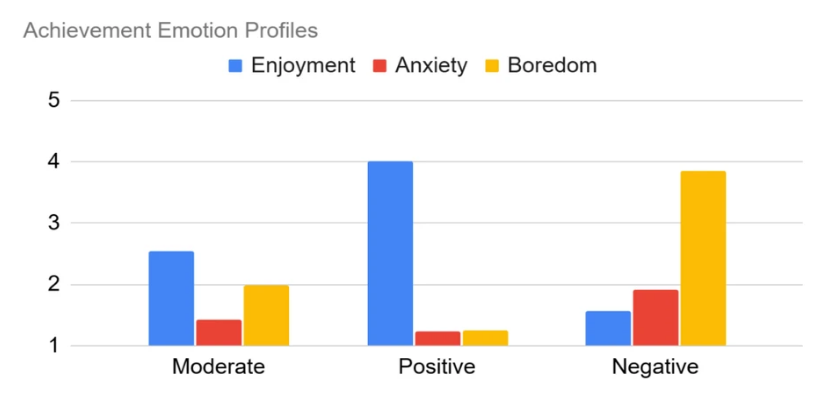
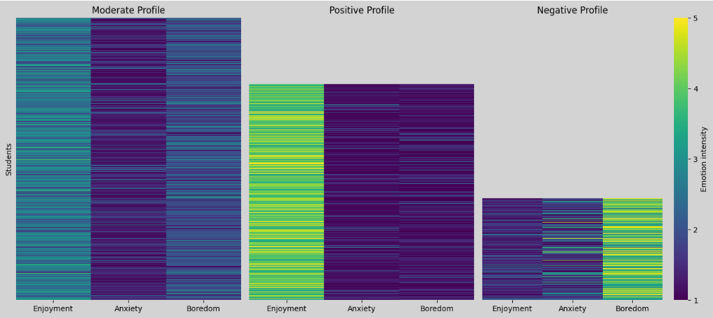
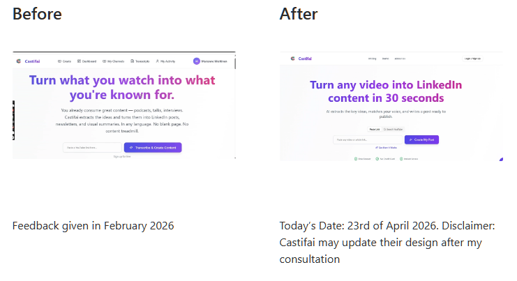
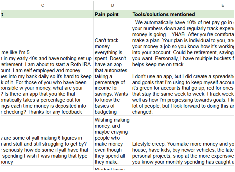

Hello, I'm Marianne.
I'm a UX Designer Trainee, and I build apps. This portfolio shows my traineeship projects — and a new crazy challenge 👀

I'm a UX Designer Trainee, and I build apps. This portfolio shows my traineeship projects — and a new crazy challenge 👀

Case study
Because people struggle with social media, I decided to do a Chrome Extension. I chose YouTube because I use it myself. I did market research because I wanted it to be evidence-based.

Decision 1 of 3
Because I conducted interviews of 4 people, I learned that many like to use YouTube for entertainment — and it is ok.
Decision 2 of 3
Because I conducted early user tests, where both participants said that journaling was too much.
You set an intention, you check in with how you're feeling, and you decide how long. Then you watch — without the guilt afterwards.
This is because the interviews and the poll results showed that people need 1) support with sticking to their intention, and 2) help with procrastination, which is an emotional problem at its core — feelings of fear and anxiety about work tasks, for example, which are then delayed. Intentional YouTube helps them identify these and understand themselves.
Decision 3 of 3
Because I tried building it, and it turned out to be more time-consuming than expected. I realised I want to stick to my own deadline — so I published without this non-essential feature.
The process
80% of people say they waste too much time on social media. That number is the reason everyone builds a blocker. I didn't trust it, so I ran 4 market research interviews and 2 polls (50+ responses) before designing anything. Every decision after this one exists because of what came back.
Click Discover to walk through each stage.

I have studied psychology, so I knew that naming the feeling helps.
Good feelings and hard ones. Click each one to catch it — that single tap is the entire check-in.
click to catch
All named.
The end — and the ask
Four insights, four decisions, one shipped extension. That's how I work: find out what's actually true first, then cut everything that isn't earning its place.
Other projects
Three roles alongside the products I build — user research in the public sector, scientific research, and usability testing for a client.
Scientific Researcher
My supervisors asked me to turn my master's thesis into a real research article.
We used the same data from the MathMot international initiative that I had worked on as a research assistant, along with the findings from my master's thesis. I made the data visualisations myself by filtering the dataset in different ways, and discovered new insights through the visualisations.
The paper is currently in peer review, as of 2026.



UX Tester
I did UX testing during the startup's early phase.
Recordings of where I, as a user, got stuck.
With screenshots of the problems in user onboarding and conversion.

User Researcher
Six steps, from raw Facebook posts to a UX design suggestion.
I collected 108 posts from a Facebook group and identified user pain points and themes.
Using Facebook's built-in tools, I identified the posts with most engagement, and the group's trends.
Based on the Facebook data, I created three avatars describing the parents of special needs children.
Based on the Facebook data, I created a user journey map for each of the three avatars.

About me
UX designer–researcher and Claude Code builder. I build tools that help people spend time intentionally and regulate anxiety.
Built for people who don't want to waste time on YouTube but can't completely get rid of it either. Set an intention, check in with how you're feeling, set a timer.